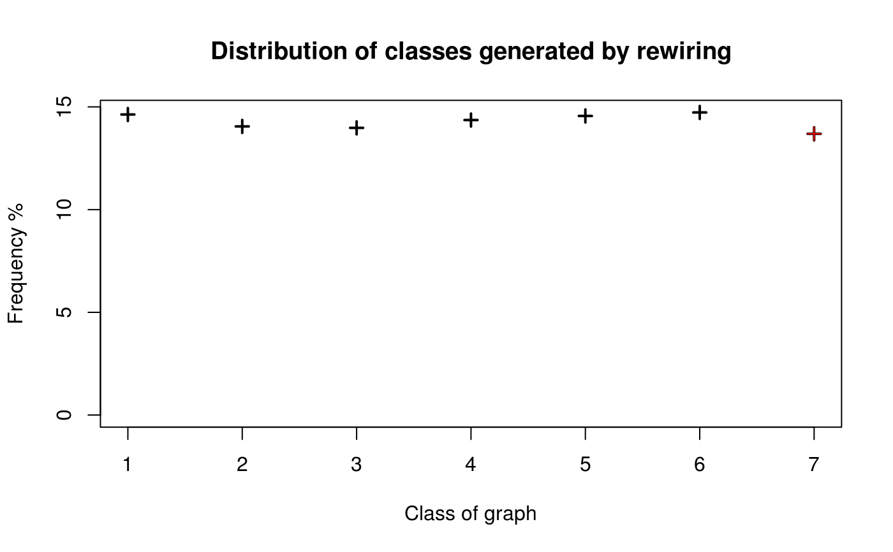

Changes the structure of a graph by altering ties.
rewire_graph( graph, p, algorithm = "endpoints", both.ends = FALSE, self = FALSE, multiple = FALSE, undirected = getOption("diffnet.undirected"), pr.change = ifelse(self, 0.5, 1), copy.first = TRUE, althexagons = FALSE )
| graph | Any class of accepted graph format (see |
|---|---|
| p | Either a [0,1] vector with rewiring probabilities ( |
| algorithm | Character scalar. Either |
| both.ends | Logical scalar. When |
| self | Logical scalar. When |
| multiple | Logical scalar. When |
| undirected | Logical scalar. When |
| pr.change | Numeric scalar. Probability ([0,1]) of doing a rewire (see details). |
| copy.first | Logical scalar. When |
| althexagons | Logical scalar. When |
The algorithm "qap" is described in rewire_qap, and only
uses graph from the arguments (since it is simply relabelling the graph).
In the case of "swap" and "endpoints", both algorithms are implemented sequentially, this is, edge-wise checking self edges and multiple edges over the changing graph; in other words, at step \(m\) (in which either a new endpoint or edge is chosen, depending on the algorithm), the algorithms verify whether the proposed change creates either multiple edges or self edges using the resulting graph at step \(m-1\).
The main difference between the two algorithms is that the "swap" algorithm
preserves the degree sequence of the graph and "endpoints" does not.
The "swap" algorithm is specially useful to asses the non-randomness of
a graph's structural properties, furthermore it is this algorithm the one used
in the struct_test routine implemented in netdiffuseR.
Rewiring assumes a weighted network, hence \(G(i,j) = k = G(i',j')\), where \(i',j'\) are the new end points of the edge and \(k\) may not be equal to one.
In the case of dynamic graphs, when copy.first=TRUE, after rewiring the
first slice--\(t=1\)--the rest of slices are generated by rewiring the rewired
version of the first slice. Formally:
$$% G(t)' = \left\{\begin{array}{ll} R(G(t)) & \mbox{if }t=1 \\ R(G(1)') & \mbox{otherwise} \end{array} \right. $$
Where \(G(t)\) is the t-th slice, \(G(t)'\) is the t-th rewired slice, and
\(R\) is the rewiring function. Otherwise, copy.first=FALSE (default),
The rewiring function is simply \(G(t)' = R(G(t))\).
The following sections describe the way both algorithms were implemented.
The "swap" algorithm chooses randomly two edges \((a,b)\) and
\((c,d)\) and swaps the 'right' endpoint of boths such that we get
\((a,d)\) and \((c,b)\) (considering self and multiple edges).
Following Milo et al. (2004) testing procedure, the algorithm shows to be well behaved in terms of been unbiased, so after each iteration each possible structure of the graph has the same probability of been generated. The algorithm has been implemented as follows:
Let \(E\) be the set of edges of the graph \(G\). For \(i=1\) to \(p\), do:
With probability 1-pr.change got to the last step.
Choose \(e0=(a, b)\) from \(E\). If !self & a == b then go to the last step.
Choose \(e1=(c, d)\) from \(E\). If !self & c == d then go to the last step.
Define \(e0'=(a, d)\) and \(e1' = (c, b)\). If !multiple & [G[e0']!= 0 | G[e1'] != 0] then go to the last step.(*)
Define \(v0 = G[e0]\) and \(v1 = G[e1]\), set \(G[e0]=0\) and \(G[e1]=0\) (and the same to the diagonally opposed coordinates in the case of undirected graphs)
Set \(G[e0'] = v0\) and \(G[e1'] = v1\) (and so with the diagonally opposed coordinates in the case of undirected graphs).
Next i.
(*) When althexagons=TRUE, the algorithm changes and applies what Rao et al.
(1996) describe as Compact Alternating Hexagons. This modification assures the
algorithm to be able to achieve any structure. The algorithm consists on doing
the following swapping: \((i1i2,i1i3,i2i3,i2i1,i3i1,i3i2)\) with values
\((1,0,1,0,1,0)\) respectively with \(i1!=i2!=i3\). See the examples and
references.
In Milo et al. (2004) is suggested that in order for the rewired graph to be independent
from the original one researchers usually iterate around nlinks(graph)*100
times, so p=nlinks(graph)*100. On the other hand in Ray et al (2012)
it is shown that in order to achive such it is needed to perform
nlinks(graph)*log(1/eps), where eps\(\sim\)1e-7, in other words,
around nlinks(graph)*16. We set the default to be 20.
In the case of Markov chains, the variable pr.change allows making the
algorithm aperiodic. This is relevant only if the
probability self-loop to a particular state is null, for example, if
we set self=TRUE and muliple=TRUE, then in every step the
algorithm will be able to change the state. For more details see
Stanton and Pinar (2012) [p. 3.5:9].
This reconnect either one or both of the endpoints of the edge randomly. As a big difference with the swap algorithm is that this does not preserves the degree sequence of the graph (at most the outgoing degree sequence). The algorithm is implemented as follows:
Let \(G\) be the baseline graph and \(G'\) be a copy of it. Then, For \(l=1\) to \(|E|\) do:
Pick the \(l\)-th edge from \(E\), define it as \(e = (i,j)\).
Draw \(r\) from \(U(0,1)\), if \(r > p\) go to the last step.
If !undirected & i < j go to the last step.
Randomly select a vertex \(j'\) (and \(i'\) if both_ends==TRUE).
And define \(e'=(i, j')\) (or \(e'=(i', j')\) if both_ends==TRUE).
If !self & i==j' (or if both_ends==TRUE & i'==j') go to the last step.
If !multiple & G'[e']!= 0 then go to the last step.
Define \(v = G[e]\), set \(G'[e] = 0\) and \(G'[e'] = v\) (and the same to the diagonally opposed coordinates in the case of undirected graphs).
Next \(l\).
The endpoints algorithm is used by default in rdiffnet and used
to be the default in struct_test (now swap is the default).
Watts, D. J., & Strogatz, S. H. (1998). Collectivedynamics of "small-world" networks. Nature, 393(6684), 440–442. http://doi.org/10.1038/30918
Milo, R., Kashtan, N., Itzkovitz, S., Newman, M. E. J., & Alon, U. (2004). On the uniform generation of random graphs with prescribed degree sequences. Arxiv Preprint condmat0312028, cond-mat/0, 1–4. Retrieved from http://arxiv.org/abs/cond-mat/0312028
Ray, J., Pinar, A., and Seshadhri, C. (2012). Are we there yet? When to stop a Markov chain while generating random graphs. pages 1–21.
Ray, J., Pinar, A., & Seshadhri, C. (2012). Are We There Yet? When to Stop a Markov Chain while Generating Random Graphs. In A. Bonato & J. Janssen (Eds.), Algorithms and Models for the Web Graph (Vol. 7323, pp. 153–164). Berlin, Heidelberg: Springer Berlin Heidelberg. http://doi.org/10.1007/978-3-642-30541-2
A . Ramachandra Rao, R. J. and S. B. (1996). A Markov Chain Monte Carlo Method for Generating Random ( 0 , 1 ) -Matrices with Given Marginals. The Indian Journal of Statistics, 58, 225–242.
Stanton, I., & Pinar, A. (2012). Constructing and sampling graphs with a prescribed joint degree distribution. Journal of Experimental Algorithmics, 17(1), 3.1. http://doi.org/10.1145/2133803.2330086
Other simulation functions:
permute_graph(),
rdiffnet(),
rgraph_ba(),
rgraph_er(),
rgraph_ws(),
ring_lattice()
# Checking the consistency of the "swap" ------------------------------------ # A graph with known structure (see Milo 2004) n <- 5 x <- matrix(0, ncol=n, nrow=n) x <- as(x, "dgCMatrix") x[1,c(-1,-n)] <- 1 x[c(-1,-n),n] <- 1 x#> 5 x 5 sparse Matrix of class "dgCMatrix" #> #> [1,] . 1 1 1 . #> [2,] . . . . 1 #> [3,] . . . . 1 #> [4,] . . . . 1 #> [5,] . . . . .# Simulations (increase the number for more precision) set.seed(8612) nsim <- 1e4 w <- sapply(seq_len(nsim), function(y) { # Creating the new graph g <- rewire_graph(x,p=nlinks(x)*100, algorithm = "swap") # Categorizing (tag of the generated structure) paste0(as.vector(g), collapse="") }) # Counting coded <- as.integer(as.factor(w)) plot(table(coded)/nsim*100, type="p", ylab="Frequency %", xlab="Class of graph", pch=3, main="Distribution of classes generated by rewiring")# Marking the original structure baseline <- paste0(as.vector(x), collapse="") points(x=7,y=table(as.factor(w))[baseline]/nsim*100, pch=3, col="red")